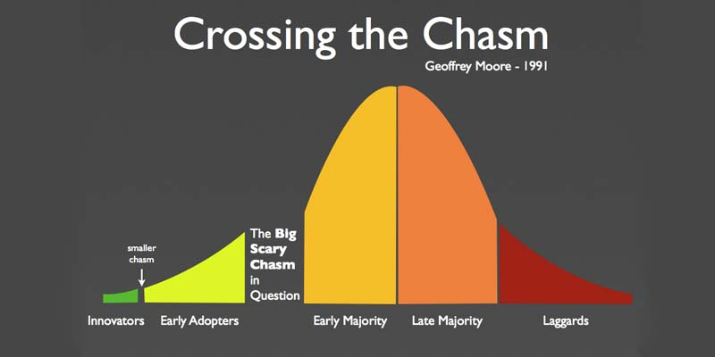
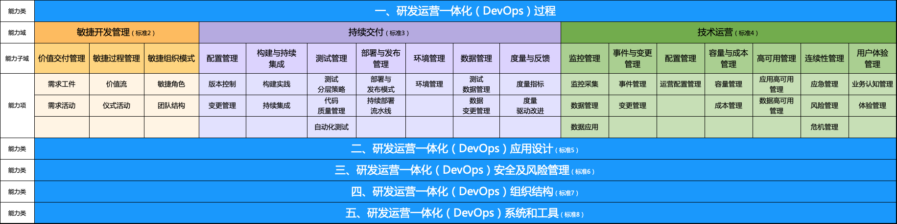
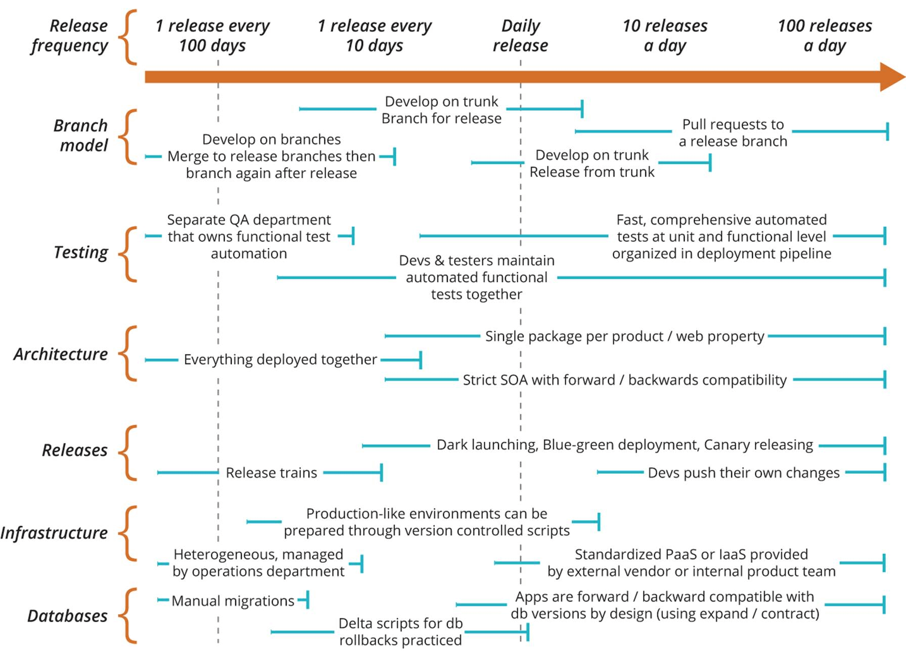
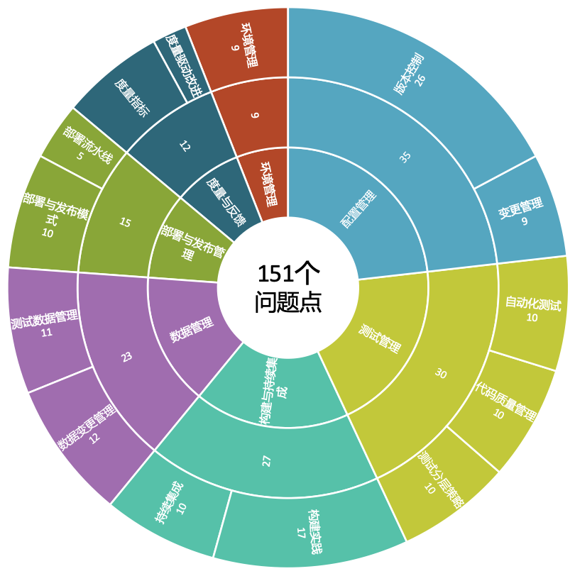

- 00 开篇词 从默默无闻到风靡全球，DevOps究竟有什么魔力？.md.html
- 01 DevOps的“定义”：DevOps究竟要解决什么问题？.md.html
- 02 DevOps的价值：数字化转型时代，DevOps是必选项？.md.html
- 03 DevOps的实施：到底是工具先行还是文化先行？.md.html
- 04 DevOps的衡量：你是否找到了DevOps的实施路线图？.md.html
- 05 价值流分析：关于DevOps转型，我们应该从何处入手？.md.html
- 06 转型之路：企业实施DevOps的常见路径和问题.md.html
- 07 业务敏捷：帮助DevOps快速落地的源动力.md.html
- 08 精益看板（上）：精益驱动的敏捷开发方法.md.html
- 09 精益看板（下）：精益驱动的敏捷开发方法.md.html
- 10 配置管理：最容易被忽视的DevOps工程实践基础.md.html
- 11 分支策略：让研发高效协作的关键要素.md.html
- 12 持续集成：你说的CI和我说的CI是一回事吗？.md.html
- 13 自动化测试：DevOps的阿克琉斯之踵.md.html
- 14 内建质量：丰田和亚马逊给我们的启示.md.html
- 15 技术债务：那些不可忽视的潜在问题.md.html
- 16 环境管理：一切皆代码是一种什么样的体验？.md.html
- 17 部署管理：低风险的部署发布策略.md.html
- 18 混沌工程：软件领域的反脆弱.md.html
- 19 正向度量：如何建立完整的DevOps度量体系？.md.html
- 20 持续改进：PDCA体系和持续改进的意义.md.html
- 21 开源还是自研：企业DevOps平台建设的三个阶段.md.html
- 22 产品设计之道：DevOps产品设计的五个层次.md.html
- 23 持续交付平台：现代流水线必备的十大特征（上）.md.html
- 24 持续交付平台：现代流水线必备的十大特征（下）.md.html
- 25 让数据说话：如何建设企业级数据度量平台？.md.html
- 26 平台产品研发：三个月完成千人规模的产品要怎么做？.md.html
- 27 巨人的肩膀：那些你不能忽视的开源工具.md.html
- 28 迈向云端：云原生应用时代的平台思考.md.html
- 29 向前一步：万人规模企业的DevOps实战转型案例（上）.md.html
- 30 向前一步：万人规模企业的DevOps实战转型案例（下）.md.html
- 期中总结 3个典型问题答疑及如何高效学习 (1).md.html
- 期中总结 3个典型问题答疑及如何高效学习.md.html
- 期末总结 在云时代，如何选择一款合适的流水线工具？.md.html
- 特别放送（一）成为DevOps工程师的必备技能（上）.md.html
- 特别放送（三）学习DevOps不得不了解的经典资料.md.html
- 特别放送（二）成为DevOps工程师的必备技能（下）.md.html
- 特别放送（五）关于DevOps组织和文化的那些趣事儿.md.html
- 特别放送（四）Jenkins产品经理是如何设计产品的？.md.html
- 结束语 持续改进，成就非凡！.md.html
- 捐赠
04 DevOps的衡量：你是否找到了DevOps的实施路线图？
你好，我是石雪峰。今天我们来聊聊DevOps的实施路线图。
商业领域有一本特别经典的书，叫作《跨越鸿沟》，这本书中提出了一个“技术采纳生命周期定律”，对高科技行业来说，它的地位堪比摩尔定律。

简单来说，这个定律描述了一项新技术从诞生到普及要经历的5个阶段，这5个阶段分别对应一类特殊人群，即创新者、早期使用者、早期大众、晚期大众和落后者。这个定律表明，技术的发展不是线性的，需要经历一段蛰伏期，才能最终跨越鸿沟为大众所接受，成为业界主流。
当然，DevOps这项所谓的新技术，在企业内部的落地也注定不是一帆风顺的。那么在这种情况下，你是否找到了DevOps的实施路线图呢？
从2017年第一届DevOpsDays大会中国站举办以来，DevOps正式在国内驶入了发展的快车道。从一门鲜为人知的新技术思想，到现在在各个行业的蓬勃发展，各种思想和实践的激烈碰撞，DevOps的理念和价值可谓是深入人心。
这样看来，DevOps已经成功地跨越了技术发展的鸿沟，从早期使用者阶段进入了早期大众的阶段，而这也意味着越来越多的公司开始尝试DevOps。
在2017年底，Forrester的一组调查数据显示，将近50%的受访公司表示已经引入并正在实施DevOps，30%的公司表示有意向和计划来开启这项工作，而对DevOps完全不感兴趣的仅占1%。可以说，2018年就是企业落地DevOps的元年。
但是，就像你要去往一个未知的目的地时，需要导航帮你规划路径、实时定位，并在出现意外情况时及时提示你是否要重新规划路径一样，企业在实施DevOps的过程中，其实也面临着相似的问题。企业自身难以清晰定位DevOps的现状，客观评估DevOps相关的能力水平，识别当前所面临的最大瓶颈以及实施DevOps的阶段性成果预期……
回顾整个IT行业的发展历程，新思想和新技术的发展，总是同标准化的模型和框架相伴相生的。
我认为，任何技术的成熟，都是以模型和框架的稳定为标志的。因为当技术跨越初期的鸿沟，面对的是广大受众，如果没有一套模型和框架来帮助大众快速跟上节奏，找准方向，是很难大规模推广并健康发展的。
比如，软件开发领域的CMMI模型（软件能力成熟度模型）、运维行业的ITIL模型等，在各自的领域都久负盛名，甚至一度被各个领域的从业者奉为圭臬和行为准则，成为衡量能力高低的标尺。
我曾经在国内某大型通讯设备公司参与过CMMI评级项目。当时，就算业务压力再大，只要是关于通过评级的事情，所有部门都会高优先级支持。由此可见，整个公司都非常重视这个认证评级项目。
那么问题来了，在DevOps这项新思想和新技术不断走向成熟的过程中，是否也有类似的模型和框架，能够指导企业内部的DevOps转型落地工作呢？
答案是有的，而且有很多。只要你去谷歌上搜一下DevOps框架、模型等关键词，就能看到非常多的结果。尤其是国外的一些知名公司，比如Atlassian、CloudBees、CA等，基本上都有一套自己的模型和框架，来帮助企业识别当前的DevOps能力水平并加以改进。
我之前参与过工信部旗下的中国信息通讯研究院牵头制定的一套DevOps能力成熟度模型。这套模型覆盖了软件交付的方方面面，包括敏捷开发管理、持续交付和技术运营三大部分，同时，也有与应用架构设计、安全和组织结构对应的内容。
不仅如此，对于开发DevOps工具的企业来说，系统和工具模型更加偏向于平台能力，稍加整理就可以作为平台需求输入到开发团队中。目前已经有不少公司在参考这套模型进行DevOps实践。下图展示了这个模型的整体框架，如果你正在企业内部推进DevOps落地的话，可以参考一下。

步骤与原则
业界有这么多模型和框架，是不是随便找一个，直接照着做就行了呢？当然不是。
毕竟，每家企业所处的行业现状、竞争压力、市场竞争态势都不尽相同，组织架构、战略目标、研发能力、资源投入等方面也千差万别，很难有一条标准的路径，让大家齐步走。比如，同样是金融企业，让万人规模的大银行和百人规模的城商行同台竞技，本身就有点强人所难。
所以，在实际参考模型和框架的时候，我认为应该尽量遵循以下步骤和原则：
1.识别差距
从“道法术器”的角度来说，DevOps的成熟度模型和框架处于“法”这个层面，也就是一整套实施DevOps的方法论，相当于是一幅战略地图，最重要的就是对DevOps实施所涉及到的领域和能力图谱建立全面的认知。
通过和模型、框架进行对标，可以快速识别出企业当前存在的短板和差距，并建立企业当前的能力状态基线，用于对比改进后所取得的效果。
2.锚定目标
数字化转型的核心在于优化软件交付效率。通过对标模型框架，企业需要明确什么是影响软件交付效率进一步提升的最大瓶颈，当前存在的最大痛点是什么，哪些能力的改善有助于企业达成预定的目标……同时，要根据企业的现状，甄别对标的差距结果，识别出哪些是真实有效的，哪些可以通过平台能力快速补齐。
比如，对于一家提供CRM软件的公司来说，容器化部署虽然在环境管理、部署发布等领域有非常多的优势，但并非当前的核心瓶颈和亟需解决的问题，那么就不应该纳入近期的改进列表中。
通过现状分析，企业可以把有限的资源聚焦在那些高优先级的任务上，识别出改进目标和改进后要达到的预期效果。这些效果需要尽量客观和可量化，比如缩短50%的环境准备时长。
3.关注能力
模型和框架是能力和实践的集合，也就是道法术器的“术”这个层面，所以在应用模型的过程中，核心的关注点应该在能力本身，而不是单纯地比较数字和结果。
比如，亚马逊每天23000次部署的案例经常会被拿来举例子。这个数字的确相当惊人，但反过来想想，所有企业都需要达到这么高的部署频率吗？举个例子，一个客户端应用可以在几分钟内构建完成，但同样是构建，对于大型系统软件来说可能需要几个小时，那么到底多长时间才算达标呢？
我们不能只关注这些明星企业所达到的成就，而忽略了自身的需求。所以，正确的做法是根据锚定的目标识别所需要的能力，再导入与能力相匹配的实践，不断强化实践，从而使能力本身得到提升。
4.持续改进
模型和框架本身也不是一成不变的，也需要像DevOps一样不断迭代更新，以适应更高的软件交付需要。另外，从今年的DevOps状态报告就可以看出，达到精英级别的比例从2018年的7%快速提升到2019年的20%，也就是说，行业整体的能力也在不断提升，这就对企业的软件交付能力提出了更高的要求。
好了，以上这些就是我总结的企业应用DevOps能力模型和框架的步骤和原则。DevOps作为一个系统性工程，同样需要与之配套的立体化实施方法，只有将方法、实践和工具结合起来，全方位推进，才有可能获得成效。
为了帮助你更好地理解DevOps实施的过程，我贴了一幅经典的部署引力图。

可以看出，当软件发布的频率从100天1次进化到1天100次的时候，分支策略、测试能力、软件架构、发布策略、基础设施能力，以及数据库能力都要进行相应的改动。比如分支策略要从长线分支变成基于特性的主干开发模式，而架构也要从大的单体应用，不断解耦和服务化。在实际应用中，企业涉及的领域甚至更多，因为这些仅仅是技术层面的问题，而组织文化方面也不可或缺。
实践案例
最后，我再跟你分享一个我之前参与改进的一个客户的案例。
刚开始跟这个客户交流的时候，他千头万绪，抓不准重点，甚至由于组织严格划分职责边界，基本上每讲到一块内容，他就要拉相应的人过来聊，在许多人都聊完之后，项目的全貌才被拼凑出来。我相信这并不是个例，很多公司其实都是如此。
于是，我们引入了能力成熟度模型，并基于模型对企业现有的能力水平进行了一次全盘梳理，并初步识别出了100多个问题点和40多个差距项。下面这张图就是汇总的大盘图，当然，部分数据进行了处理。

接下来，针对识别出来的这些差距点，我逐项跟企业进行了沟通，重点在于锚定一期的改进目标和具体工作事项。在沟通过程中，我发现由于企业所处行业的特殊性，或者客观条件不具备，有些内容并非优先改进事项，于是将改进事项缩减为30个，并识别出这些改进事项的相互依赖和预期目标。比如，这个企业之前初始化一套环境需要2周左右的时间，为了加快整体交付能力，我们将改进目标定到1周以内完成。
好啦，有了改进目标和预期效果之后，就要分析哪些关键能力制约了交付效率的提升。还拿刚才那个例子来说，核心问题在于环境的初始化过程复杂以及审批流程冗长。其中，原有的初始化过程是研发整理一份部署需求文档，来说明应用所依赖的环境和版本信息，并且这个需求还被整合到一个40多页的文档中。运维团队根据这个文档部署，每次都很不顺利，因为软件功能迭代所依赖的环境也在不断更新，但文档写出来就再也没人维护了。所以，很多人说文档即过时，就是这个道理。
识别出核心能力在于自动化环境管理之后，团队决定引入基础设施即代码的实践来解决这个问题。关于具体的技术细节，我会在后面的内容中展开，这里你只需要知道，通过将写在文档中的环境配置说明，转变成配置化的信息，并维护在专门的版本控制系统中，从而使得基础环境的初始化可以在分钟级完成。
当然，审批环境的优化属于非技术问题，而是流程和组织方面的问题。当大家认识到这些审批在一定程度上制约了发布频率的提升，就主动改进了现有流程。针对不同的环境进行不同级别的审批，使得单次审批可以在当天完成。
这样优化下来，环境准备的时长大大缩短，从当初的2周缩短到了2天，改进效果非常明显。接下来，团队又识别出新的差距，锚定新的目标和预期效果，并且有针对性地补齐能力建设，走上了持续改进的阶段。
由此可以看出，DevOps的能力实践和能力框架模型相辅相成：能力实践定义了企业落地DevOps的路线图和主要建设顺序，能力模型可以指导支撑方法的各类实践的落地建设；能力实践时刻跟随企业价值交付的导向，而能力模型的积累和沉淀，能够让企业游刃有余地面对未来的各种挑战。
至于ITIL和CMMI，这些过往的框架体系自身也在跟随DevOps的大潮在持续演进，比如以流程合规为代表的ITIL最近推出了第4个版本。我们引用一下ITIL V4的指导原则，包括：关注价值、关注现状、交互式流程和反馈、协作和可视化、自动化和持续优化、极简原则和关注实践。
看起来是不是有点DevOps的味道呢？需要注意的是，DevOps不会彻底颠覆ITIL，只会在保证合规的前提下，尽可能地优化现有流程，将流动、反馈和持续学习改进的方法注入ITIL之中，从全局视角持续优化企业的价值交付流程。
总结
总结一下，今天我给你介绍了新技术和新思想的发展需要面对的鸿沟，而能力模型和框架是技术和思想走向成熟的标志，对于DevOps而言，也是如此。在面对诸多模型和框架的时候，企业需要立足自身，识别差异，锚定目标，关注能力，并持续改善软件的开发交付效率。DevOps的实施需要立体化的实施框架，通过模型、方法、能力和实践的相互作用，实现全方位的能力提升。
到此为止，我们整体介绍了DevOps的基本概念、核心价值、实施方法和路线图，帮助你建立了一套有关DevOps的宏观概念。接下来我们就会开始深入细节，尤其是针对每一项核心实践，我会介绍其背后的理念、实施步骤，以及所依赖的能力模型，手把手地帮助你真正落地DevOps。
思考题
最后，给你留一道思考题：关于CMMI、ITIL和DevOps，你觉得它们之间的关系是怎样的呢？企业该如何兼顾多套模型框架呢？
欢迎在留言区写下你的思考和答案，我们一起讨论，共同学习进步。如果你觉得这篇文章对你有所帮助，欢迎你把文章分享给你的朋友。
© 2019 - 2023 Liangliang Lee. Powered by gin and hexo-theme-book.